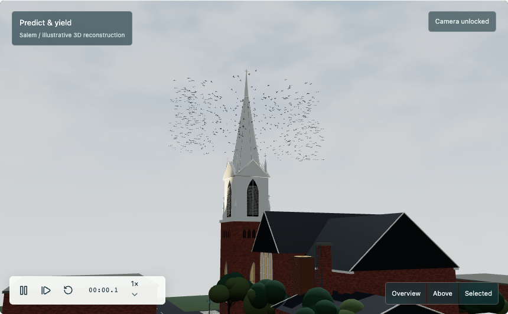

The map
A representation of the place.
Design thinking + building with AI
Better apps begin with the people who use them.
Greg Chism
Assistant Professor of Practice · Director of Instructional Computing
University of Arizona · InfoSci

Example 1 / 3 minutes
Find a familiar entrance or crossing. What does the map miss?
A representation of the place.
What using the place taught you.
Whose knowledge gets a say?
Room discussion only. This is not a live poll.
What could you tell it?
Example 2 / 2 minutes
A signal in your listening history.
Sleep? Friends? Your own taste?
Whose knowledge gets a say?
Room discussion only. This is not a live poll.
Try “Exclude from your taste profile” in the full app.
Open my Spotify ↗One vote / 2 minutes
One task. One small prototype. One test.
Selected: Collective
Collective / first encounter / 4 minutes
I designed this from what I know.
Try it with fresh eyes.
Explore, pair up, or watch. Installation is optional.
Two groups / 4 minutes
Use a public screen. Keep private information off the projector.
Our brief / 3 minutes
Our working brief stays on this device. It is included only when you submit a sketch.
Two groups / 3 minutes
Sketch the next step.
One idea and why it might help.
Draw with a finger or pointer. Draft recovery is enabled on this device.
Prepared alternative / 3 minutes
Watch. Observe. Review.
A local note. Room for uncertainty.
Compare with your sketches.
Prepared before today. Still a hypothesis.
Settings → Experience switches between both versions. No research submissions.
A direction to try / 3 minutes
Choose by our criteria.
Figma Make / 6 minutes / stop at minute 28
Person + task
Who needs to do what?
Evidence + choice
What did we see?
Limits + test
What will we watch for?
One generation. One repair. Then test.
A volunteer test / 5 minutes
“Here’s your goal.
Show us what you would do.”
Our revision / 2 minutes
Sketch the revision. No second build session.
Takeaway / questions
AI helps us build. People help us find out whether it helps.
Keep exploring: Collective. Optional installation. Salem footage stays online.